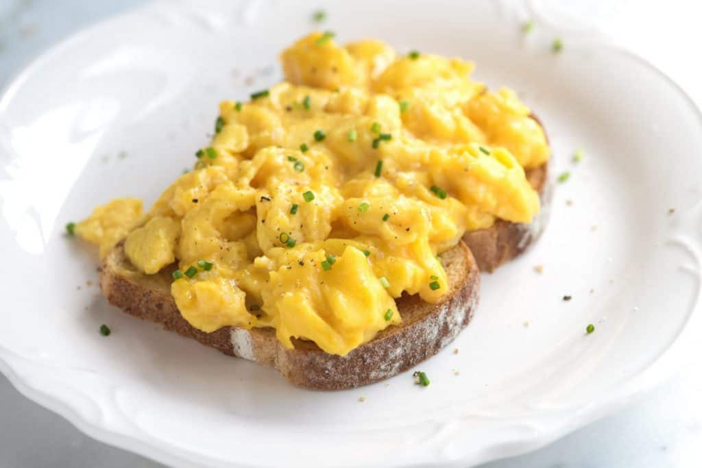

Scrambled Eggs Recipe

Perfect Creamy Scrambled Eggs
This recipe makes perfect scrambled eggs that are super soft
and creamy. A quality non-stick pan and silicone spatula are
really useful. It's important that you use low heat and don't
forget about the chance of carryover cooking. Eggs are
delicate and cook very quickly. I like to take the pan off of
the heat before the scramble has finished cooking. Give the
eggs a few seconds in the hot pan (off the heat) and you'll
find the eggs turn out to be perfectly cooked — not dry, and
not too wet.
Ingredients
- 4 large eggs
- 1/8 teaspoon kosher salt, or more to taste
- 1/2 tablespoon butter or olive oil
Steps
- Melt the butter in a medium non-stick pan over medium-low heat.
- Crack eggs into a bowl, add a pinch of salt and whisk
until well blended. Let sit for 5 to 10 minutes.
- When the butter begins to bubble, pour in the eggs and
immediately use a silicone spatula to swirl in small
circles around the pan, without stopping, until the eggs
look slightly thickened and very small curds begin to form,
about 30 seconds.
- Change from making circles to making long sweeps across
the pan until you see larger, creamy curds, about 20
seconds.
- When the eggs are softly set and slightly runny in places,
remove the pan from the heat and leave for a few seconds to
finish cooking. Give a final stir and serve immediately.
Serve with an extra sprinkle of salt, a grind of black
pepper and a few fresh chopped herbs (if desired).